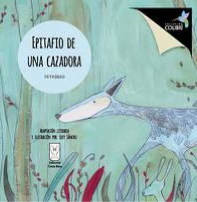

Autora e ilustradora: Lucy Sánchez
Colección: Colibrí Editorial: Editorial Costa Rica
ISBN 9789930519073
Año 2015
28 páginas,
1a edición
105 gramos, 21cm x 21cm
Precio USD$15 *
*Incluye transporte a todo el territorio costarricense.
INTERNACIONAL: Tramitar compra directamente con la Editorial Costa Rica.
¿Tiene algún problema? contácteme.